今回使用するツールは『gameguardian』『virtual xposed』です
gameguardianのダウンロード virtual xposedのダウンロードgameguardianはRoot環境または、仮想空間を使わないと機能しません。
今回使は仮想空間(VirtualXposed)を使った方法を紹介します
ほとんどのゲームをハックすることが可能ですが仮想空間が対応しない場合があります。
その時は、他の仮想空間を調べて使ってください。
1.gamegurdianとvirtualxposedをダウンロード
gameguardianをダウンロードgameguardianのダウンロード手順
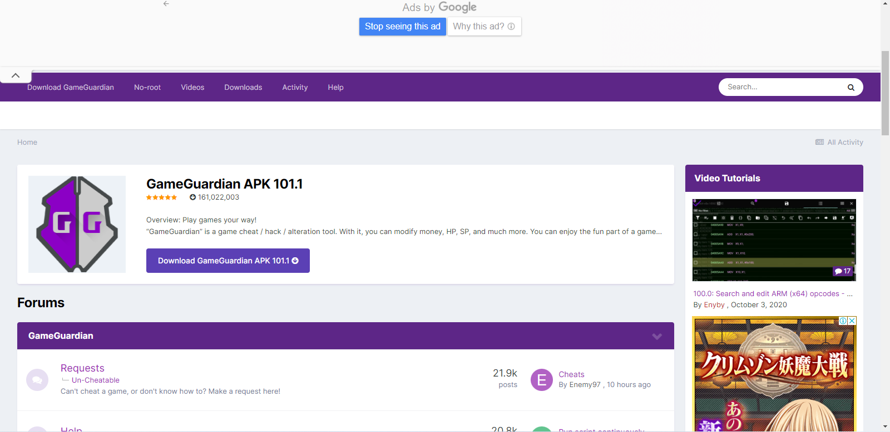.Downloaad GameGuardian APK を押します
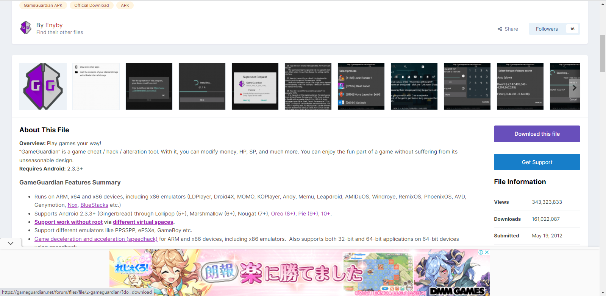.次にDownload this file を押します
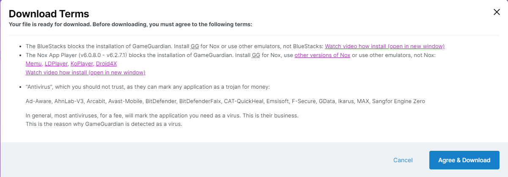.この画面が出てきたらAgree＆Downloadを押します
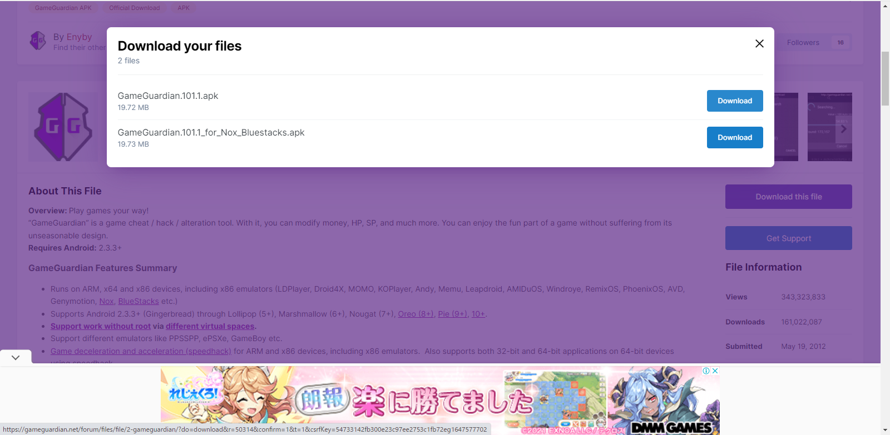.上のGameGuardianをダウンロードしてください
下のGameGuardianはpc用です
次にvirtualxposedのダウンロード手順
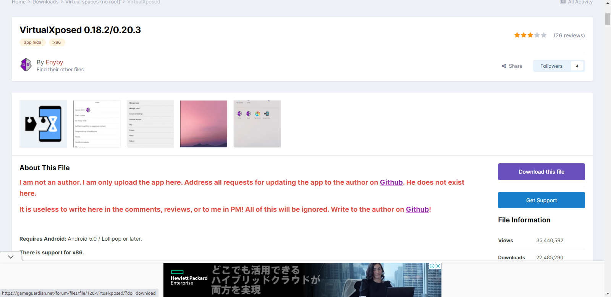">.Download this file を押します
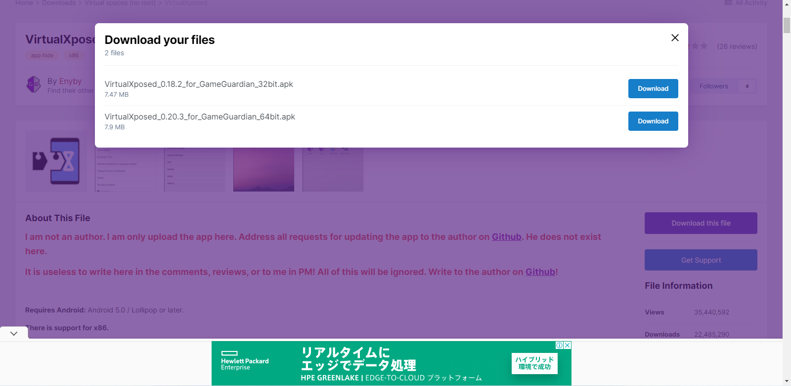">.この画面では下のvirtualxposed(64bit)をダウンロードします
ダウンロードしてインストールが失敗する場合は上のvirtualxposed(32bit)をダウンロードしてみてください
ダウンロードができたらインストールしてください
2.GameGuardianの設定
さっきダウンロードしたGameGuardianをインストールし開きます
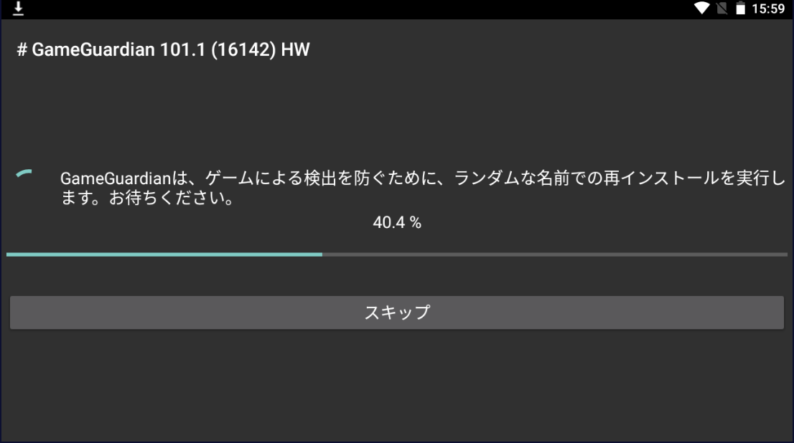">.このような画面になったらスキップをせず、待ってください
新しいgameguardianがインストールされたので最初のgameguardianはアンインストールしてok
gameguardianを開いたら出口を押して終了してください
これでgameguardianの設定は終わりです
3.virtualxposedの設定
さっきダウンロードしたvirtualxposedをインストールして開いてください
設定から仮想空間に全権利をonにするといいかも(推薦)
ここは外部をタップしたりして無視しちゃっていいです
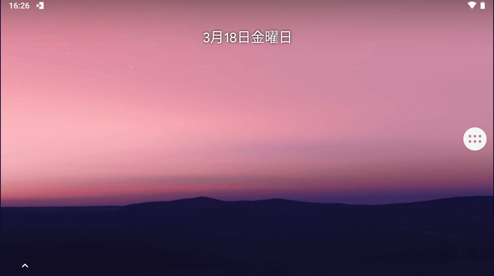">.このホーム画面になったら隅にある白い丸のを押します
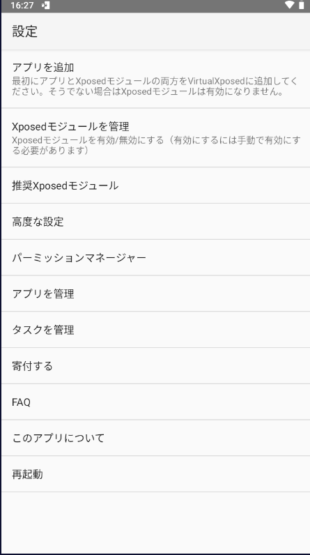">.設定から『高度な設定』を開きます
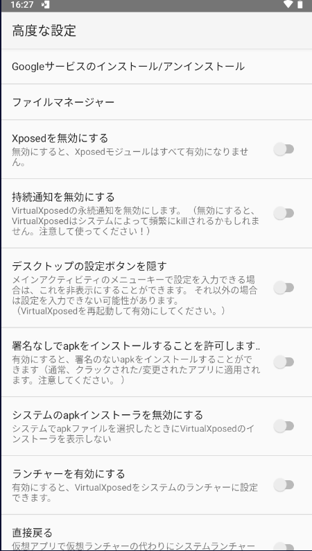">.一番上のGoogleサービスのインストール/アンインストールを開き
Googleサービスをインストールします
インストールするまでしばらく待ちます
また、設定に戻り、『アプリを追加』を開きます
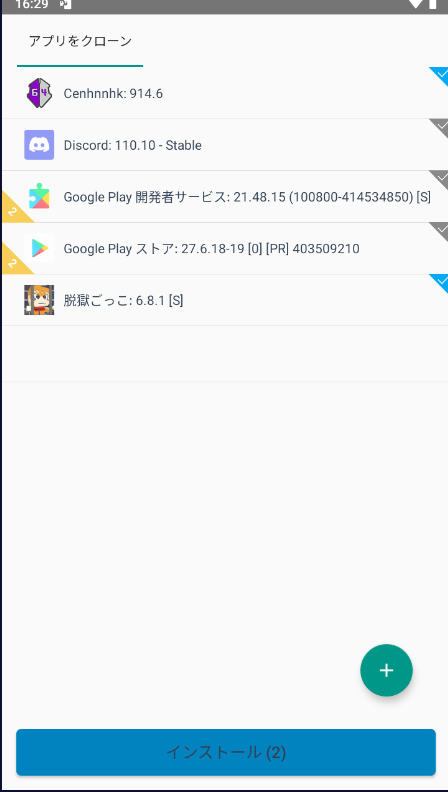">.ここでgameguardianとハックしたいゲームを選択してインストールします
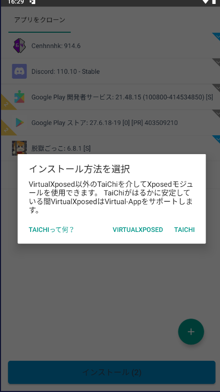">.VIRTUALXPOSEDを押します
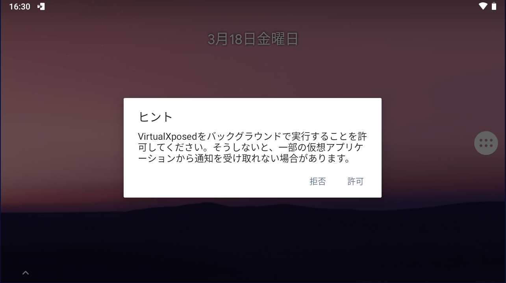">.この画面が出たら権利を許可してください
これでvirtualxposedの設定は終わりです。
・gameguardianはvirtualxposed内でないと機能しないので
virtuallxpsedでgameguardianとゲームを開いてください。
・チートをする際は自己責任でお願いします。
・このサイトではあくまでチートの準備を紹介しています。
本来のチートのやり方やgameguardianの使い方は
載っていません。
分らないことやこのサイトの間違っていること等が
ありましたら下記から連絡お願いします。
フォローよろしくね！！